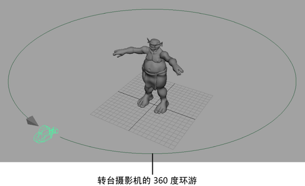
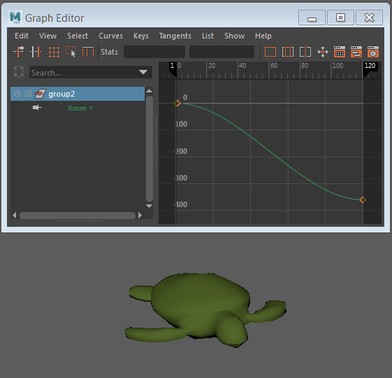

您可以创建转台动画，以 360 度的方式查看场景中的单个或多个对象。
创建转台动画
- 选择要为其创建转台动画的对象。
- 从“动画”(Animation)菜单集中选择“可视化 > 创建转台”(Visualize > Create Turntable) >
 。
。
- 输入要查看转台在其中呈 360 度全方位旋转的帧数，然后单击“应用”(Apply)和“关闭”(Close)。设置的帧数确定转台动画的速度。例如，60 帧的转台动画的播放速度比 120 帧的转台动画快一倍。
已创建名为 turnTableCamera1 的摄影机，且当前视图成为新转台摄影机的视图。
注：- 转台摄影机的视图处于锁定状态。您不能推拉、翻滚或平移转台摄影机。
- 如果对象由许多对象组合而成，则转台聚焦在对象的根上。
- 如果已对对象设置动画，则转台摄影机围绕动画第一帧处的位置旋转。
- （可选）如果希望转台动画循环，请将场景的“播放结束时间”(Playback End Time)更改为在“创建转台动画选项”(Create Turntable Animation options)窗口的“帧数”(Number of Frames)字段中输入的帧数。
- 单击“动画播放控件”(Animation Playback Controls)中的“播放”(Play)按钮。
转台摄影机围绕选定对象进行动态观察。这将为指定的帧数创建对象的转台类型动画。
默认情况下，转台动画开始于第 1 帧并播放指定的帧范围。
- 按 Esc 键停止转台动画。
转台摄影机连同透视摄影机（“透视”(persp)）一起存储在面板菜单上。如果要创建另一个具有不同速度和方向设置的转台摄影机，请在创建新的转台摄影机之前选择“透视”(persp)摄影机。创建转台摄影机后，可以使用菜单快速从一个摄影机切换到另一个摄影机。
编辑转台动画
您可以在“曲线图编辑器”(Graph Editor)中修改转台的旋转。在“大纲视图”(Outliner)中选择包含转台摄影机的组；动画曲线将作为“旋转 Y”(Rotate Y)显示在“曲线图编辑器”(Graph Editor)中。
